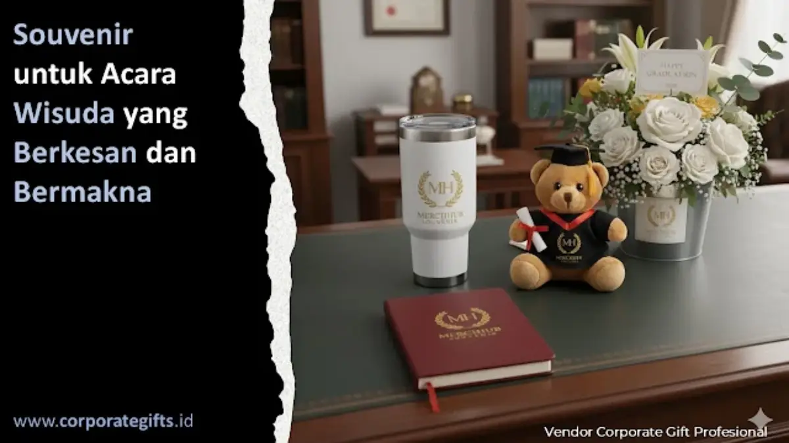

Corporate Gifts ID - Souvenir untuk acara wisuda adalah cinderamata berharga yang diberikan kepada wisudawan, dosen, maupun tamu kehormatan sebagai bentuk apresiasi tertinggi atas capaian akademik yang telah diraih. Cinderamata kelulusan seperti tumbler stainless custom, plakat akrilik, dan notebook agenda kulit berperan sebagai simbol kebanggaan sekaligus pengingat abadi atas dedikasi dan kerja keras selama masa perkuliahan.
Di balik toga dan senyum bahagia, tersimpan rasa haru, kebanggaan, serta ucapan terima kasih mendalam kepada keluarga dan almamater. Oleh sebab itu, pengadaan suvenir kelulusan kini berkembang menjadi tradisi penting bagi perguruan tinggi untuk memperkuat ikatan emosional alumni dengan almamater.
Poin Kunci Pengadaan Souvenir Wisuda Kampus:
- Simbol Kebanggaan Abadi: Cinderamata yang dipersonalisasi menjadi artefak kenangan seumur hidup bagi para wisudawan dan keluarga.
- Pilihan Multi-Kategori: Menyediakan produk fungsional harian, dekorasi estetis, piranti digital, hingga material ramah lingkungan.
- Penguatan Citra Almamater: Merchandise wisuda yang elegan mencerminkan reputasi akademik dan mutu perguruan tinggi.
- Fleksibilitas Anggaran: Penataan paket terpadu menghasilkan suvenir yang terjangkau tanpa mengurangi nilai estetika dan kualitas bahan.
Mengapa Souvenir Wisuda Sangat Penting & Bermakna?
Souvenir wisuda merupakan media komunikasi simbolis yang menyampaikan pesan apresiasi mendalam tanpa kata. Dalam seremoni kelulusan, cinderamata tidak sekadar berfungsi sebagai pelengkap seremoni, melainkan lambang transisi penting dari dunia akademik menuju jenjang profesional.
Selain itu, pemberian cinderamata eksklusif secara nyata memperkuat citra perguruan tinggi. Kampus yang membagikan paket kelulusan tertata apik akan dipandang sebagai institusi yang menaruh perhatian besar pada detail dan sangat menghargai jerih payah mahasiswanya.
4 Kategori Souvenir Wisuda yang Paling Diminati
Berdasarkan preferensi panitia wisuda dan institusi pendidikan di Indonesia, terdapat 4 kategori cinderamata kelulusan yang paling banyak diminati:
1. Souvenir Fungsional Berkualitas Tinggi
Item yang dapat langsung digunakan dalam dunia kerja seperti tumbler stainless SUS304 vacuum insulated, tote bag kanvas premium, dan pulpen metal grafir nama menjadi pilihan utama karena memiliki usia pakai yang sangat panjang.
2. Souvenir Estetis & Bernilai Kenangan (Nostalgia)
Plakat akrilik wisuda, mini frame foto berukir logo almamater, dan miniatur boneka toga tetap menjadi favorit bagi wisudawan yang menginginkan pajangan estetis untuk dipajang di ruang kerja atau ruang keluarga.

Kombinasi hadiah wisuda personal dengan kotak gift box beludru eksklusif untuk jajaran wisudawan terbaik dan dosen penguji.
3. Souvenir Digital & Gadget Pintar
Perkembangan teknologi mendorong adopsi flashdisk kartu custom, powerbank berkapasitas besar, dan smart LED tumbler. Media penyimpanan kartu sangat ideal untuk memuat file e-buku kenangan, rekaman video prosesi wisuda, serta direktori ikatan alumni.
4. Souvenir Berkelanjutan Ramah Lingkungan (Eco-Friendly)
Produk berbahan serat bambu alami, kertas daur ulang bersertifikat FSC, serta tas kanvas katun organik semakin populer di kalangan kampus yang berkomitmen terhadap prinsip pembangunan berkelanjutan.
Tabel Matriks Pilihan Cinderamata Wisuda & Karakteristiknya
Berikut komparasi spesifikasi material, fungsi utama, dan segmentasi peruntukan suvenir wisuda untuk mempermudah perencanaan alokasi anggaran:
| Pilihan Cinderamata | Material Utama | Karakteristik & Nilai Guna | Segmentasi Penerima | Tingkat Retensi |
|---|---|---|---|---|
| Tumbler Stainless SUS304 | Double Wall Insulated Steel | Tahan panas dingin 12-24 jam, grafir laser | Seluruh Wisudawan | Sangat Tinggi |
| Notebook Agenda Kulit | PU Leather Hardcover A5 | Deboss logo almamater, siap kerja profesional | Wisudawan & Panitia | Tinggi |
| Plakat Akrilik / Kristal | Akrilik Bening / Optic Crystal | Pajangan seremonial, grafir nama wisudawan terbaik | Wisudawan Cumlaude & Dosen | Sangat Tinggi |
| Set Pulpen Metal Grafir | Metal Alloy Rollerball | Kemasan gift box magnetik, grafir nama personal | Dosen Penguji & Senat | Sangat Tinggi |
| Flashdisk Kartu Custom | PVC Card Chip Original | Memuat database alumni & dokumentasi kelulusan | Seluruh Wisudawan | Tinggi |
| Tote Bag Kanvas Premium | Heavy Canvas 14 oz | Wadah berkas ijazah, ramah lingkungan, modis | Wisudawan & Tamu Undangan | Tinggi |
Mencerminkan Identitas Kampus Melalui Detail Personal
Setiap perguruan tinggi memiliki karakter budaya yang khas. Kampus berbasis teknologi informasi dapat menonjolkan cinderamata bergaya minimalis modern dan gadget cerdas, sementara perguruan tinggi seni atau keagamaan dapat memadukan estetika tradisional yang hangat.
Sentuhan personalisasi seperti pencantuman nama lengkap lulusan beserta gelar akademik baru, tahun angkatan, atau kutipan rektor memberikan nilai emosional yang tak ternilai. Hal yang sama berlaku bagi paket cinderamata jajaran senat dan dosen penguji skripsi, di mana penyerahan souvenir dosen penguji yang terbungkus rapi mencerminkan rasa hormat yang mendalam.
Tips Memilih Vendor & Paket Souvenir Wisuda yang Tepat
Guna menjamin kelancaran distribusi pada hari pelaksanaan prosesi wisuda, pertimbangkan langkah-langkah praktis berikut:
- Sesuaikan dengan Konsep & Dresscode Wisuda: Selaraskan warna aksen suvenir dengan warna panji fakultas atau toga kelulusan.
- Utamakan Daya Tahan Material Produk: Pastikan barang yang diproduksi tidak mudah rusak agar tetap berfungsi bertahun-tahun kemudian.
- Bekerja Sama dengan Vendor B2B Resmi: Pilih produsen berpengalaman seperti CorporateGifts.ID yang menyediakan jaminan garansi mutu, faktur pajak resmi, dan kapasitas produksi ribuan unit per batch.
- Lakukan Pemesanan Lebih Awal: Idealnya, finalisasi desain dan jumlah pesanan telah disepakati 3 hingga 4 pekan sebelum gladi bersih wisuda.
Dampak Positif Cinderamata Wisuda bagi Institusi Pendidikan
Pengadaan souvenir wisuda yang dipersiapkan secara matang menghadirkan berbagai dampak positif berkelanjutan:
- Meningkatkan Reputasi Universitas: Menunjukkan perhatian institusi terhadap standar mutu penyelenggaraan kegiatan resmi.
- Mempererat Hubungan Alumni: Menguatkan loyalitas lulusan untuk terus berkontribusi bagi almamater melalui ikatan alumni.
- Promosi Organik Melalui Media Sosial: Wisudawan dengan antusias membagikan foto suvenir unik mereka ke jejaring profesional seperti LinkedIn dan Instagram.
- Menjaga Martabat Akademik: Memberikan kenang-kenangan yang pantas bagi pimpinan universitas dan tamu kehormatan kenegaraan.
Pertanyaan Seputar Souvenir Wisuda (FAQ)
Kesimpulan dan Konsultasi Pengadaan Resmi
Souvenir wisuda adalah representasi nyata dari dedikasi dan perjalanan panjang para mahasiswa. Melalui pemilihan produk yang fungsional, estetika kemasan yang mewah, serta keandalan vendor pengadaan bergaransi, sebuah cinderamata mampu menghadirkan kebanggaan dan kenangan abadi bagi segenap sivitas akademika.
Rencanakan kebutuhan cinderamata wisuda perguruan tinggi Anda bersama CorporateGifts.ID. Kunjungi e-katalog produk resmi kami atau ajukan permohonan penawaran harga melalui formulir permintaan penawaran resmi untuk solusi pengadaan berstandar prima.